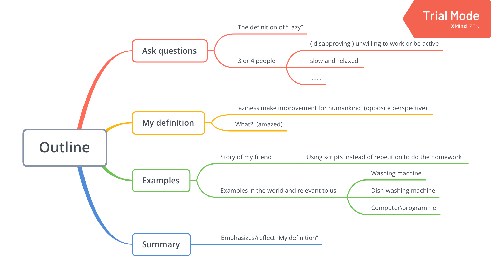
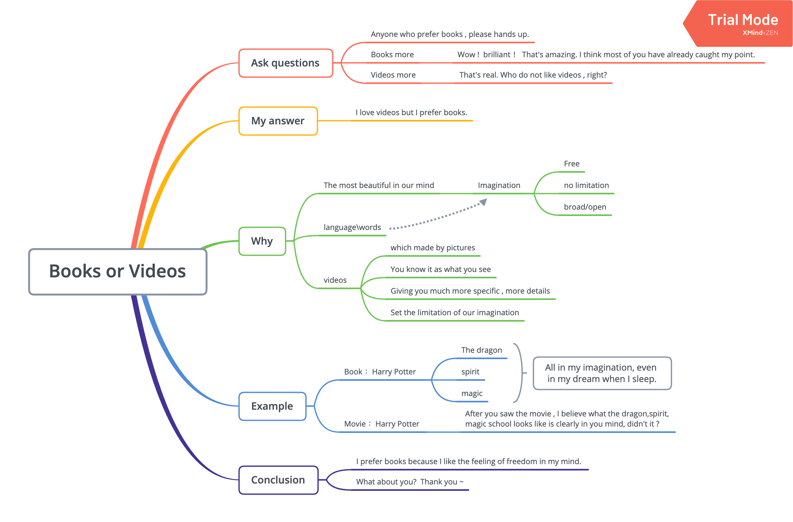
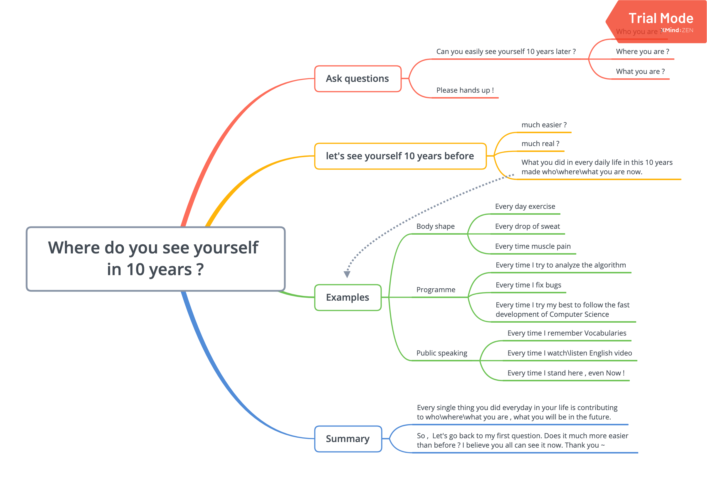

In this page, I’d like to share the topic lists of Public Speaking Society and my presentation.
Topics
- Money or love ?
- There is no such thing as ‘luck’.
- Social media is the 21th century’s most harmful drug.
- How do lazy students survive/succeed in life ?
How do lazy students survive/succeed in life ?

Topics
- Pain and suffering are always inevitable for a large intelligence and a deep heart.
- What horrifies me the most is the idea of being useless.
- First thing you’d do if you won the lottery.
- Tell us about one childhood memory that is special to you.
- Pick your own topic: “Books or Videos”.
Books or Videos

Topics
- Where do you see yourself in 10 years ?
- If you could make one animal fly, what would it be ?
- A journey of a thousand miles begins with a step.
- Should you read the book or watch the movie ?
Where do you see yourself in 10 years ?
